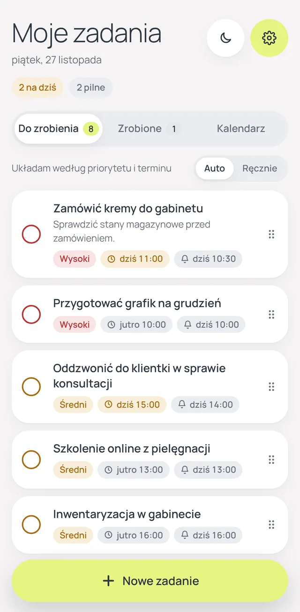
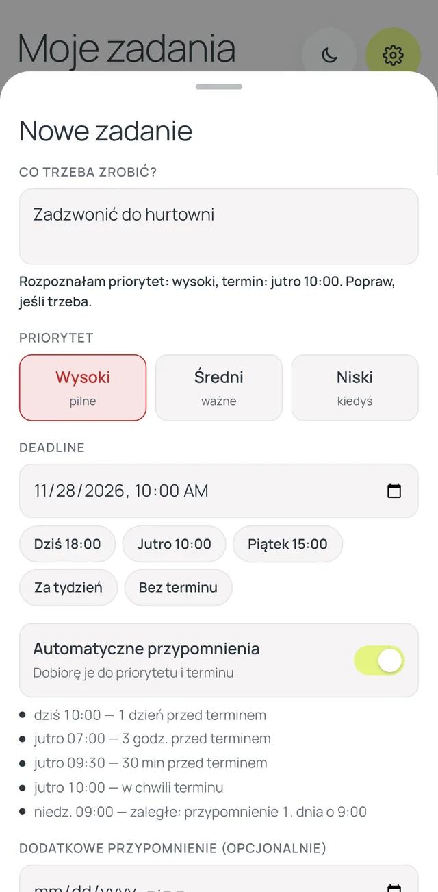
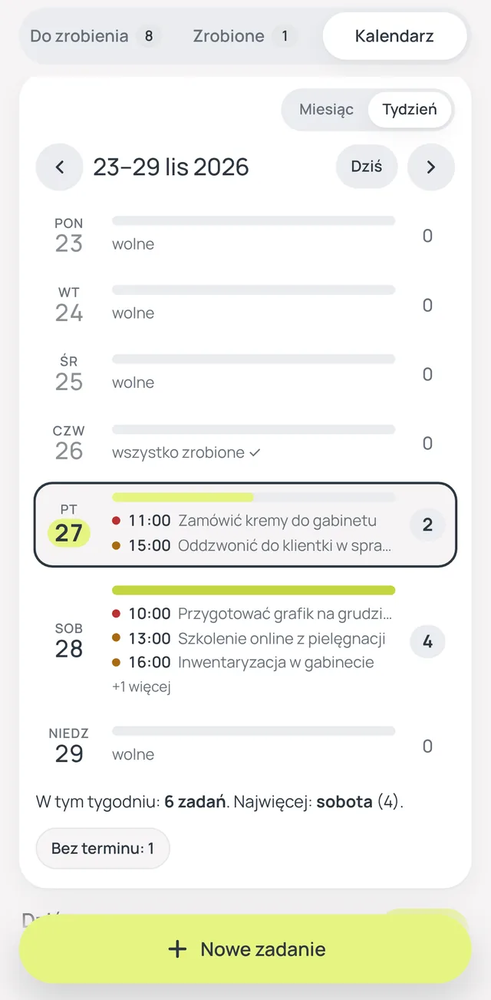
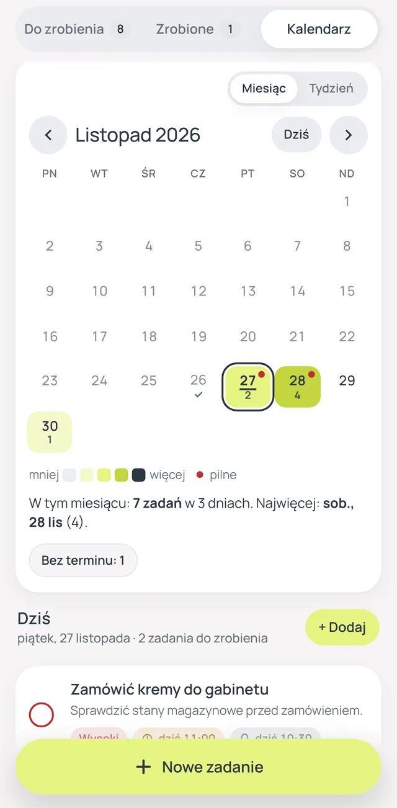
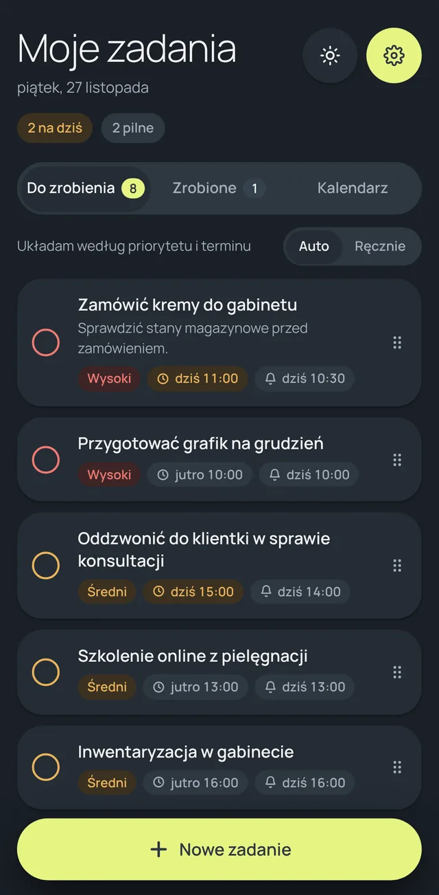
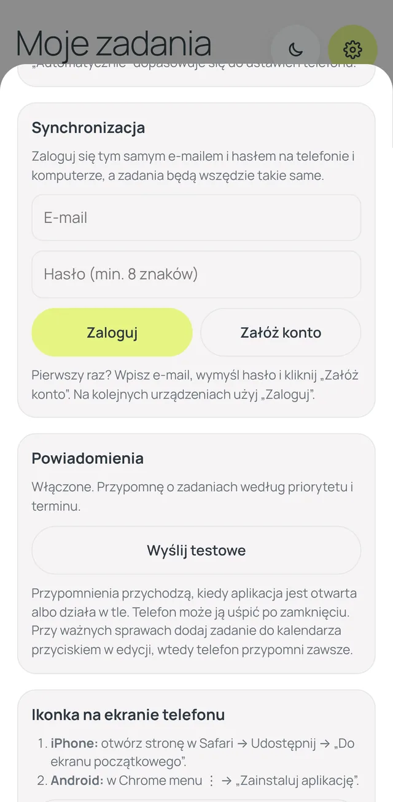
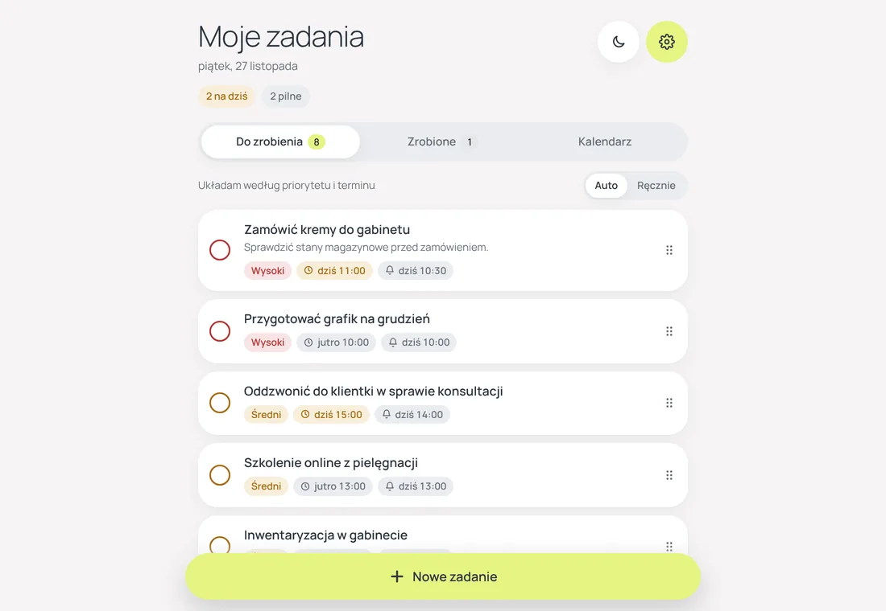

Zapisujesz zadania, ustawiasz priorytet i termin, a aplikacja sama przypomina, co trzeba zrobić. Działa na telefonie i na komputerze, a zadania są wszędzie takie same.

Najważniejsze widoki aplikacji.





Przesuń palcem w bok, żeby zobaczyć kolejne →
Wybierz urządzenie. Zacznij od tego, którego będziesz używać najczęściej.
Uruchom Chrome i wpisz olixx101.github.io/magda/. Jeśli czytasz tę stronę na komputerze, zeskanuj aparatem telefonu kod QR z zakładki „Windows”.
Przytrzymaj ikonkę palcem, a zobaczysz skrót „Nowe zadanie”.
Logujesz się tylko raz, aplikacja Cię zapamięta. Twoje zadania widzisz tylko Ty.
Nie widzisz powiadomień? Sprawdź Ustawienia telefonu → Aplikacje → Zadania (albo Chrome) → Powiadomienia. Tryb „Nie przeszkadzać” też je wycisza.
Uruchom Microsoft Edge albo Google Chrome i wpisz olixx101.github.io/magda/.

Aplikacja otworzy się w osobnym oknie i pojawi w menu Start.
Zeskanuj ten kod aparatem telefonu. Otworzy się Twoja aplikacja w przeglądarce telefonu.
Potem dodaj ikonkę na ekran tak jak w zakładce „Android”, krok 2: ⋮ → „Zainstaluj aplikację”.
Skróty: Esc zamyka okno zadania. Do dyktowania kliknij pole zadania i naciśnij Win + H albo użyj Wispr Flow.
Pytania? Napisz do Oli.